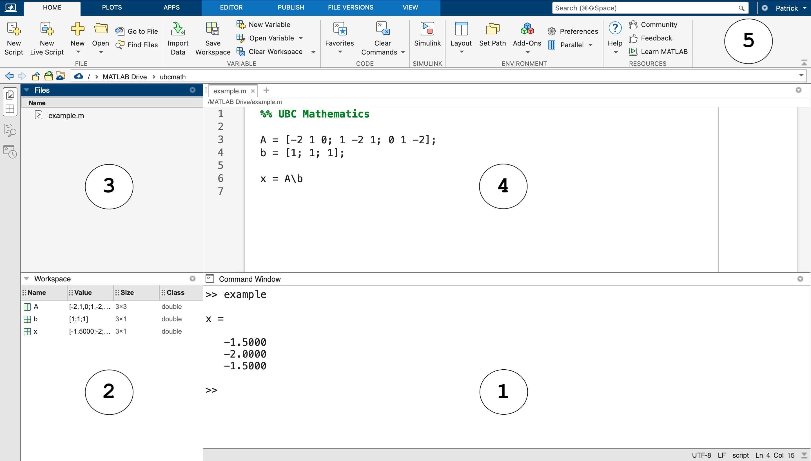

Development Environment#
Before we get into mathematical computing with MATLAB, let’s take a tour of the MATLAB development environment and learn about basic commands, variables, scripts and data files.
See also
Check out the MATLAB documentation on Getting Started with MATLAB, and the MATLAB Academy for online courses such as MATLAB Onramp.
Overview#
The MATLAB development environment consists of 5 parts:
Command Window: enter commands and view output
Workspace: list of variables defined in the current environment
Files: navigate the file system
Editor: create and edit scripts
Toolbar: create and save files and set preferences

Command Window and Workspace#
Let’s do a simple example to show how to enter commands, view output and save variables. Consider the system of linear equations
where the matrix \(A\) and vector \(\mathbf{b}\) are
Create the matrix \(A\) by entering the following command at the prompt >> in the command window:
A = [-2 1 0; 1 -2 1; 0 1 -2]
The output of the command is printed to the command window:
A =
-2 1 0
1 -2 1
0 1 -2
The newly created variable A appears in the workspace. Create the vector b:
b = [1; 1; 1]
Again the output is printed to the command window and the variable appears in the workspace:
b =
1
1
1
Finally, compute the value x using the slash operator:
x = A\b
The variable x is printed to the command window and the variable appears in the workspace:
x = -1.5000 -2.0000 -1.5000
Clear the workspace with the command clear and clear the command window with clc:
clear; clc;
Save Code in Scripts#
We can enter commands in the command window however it is good practice to save commands in a MATLAB script. A script is simply a text file containing MATLAB code and has file extension .m.
Let’s repeat the previous example using a script instead of entering all the commands in the command window:
Create a new script by clicking
New Scriptfrom the toolbar.Enter the commands from the previous example in the new script appearing in the editor window.
Save the script by clicking
Savein the toolbar and give the file a name such asexample.m.Run the script by clicking
Runin the toolbar.
Note that a semicolon at the end of a command suppresses the output in the command window. Therefore we run the following script and generate the output for x only:
A = [-2 1 0; 1 -2 1; 0 1 -2];
b = [1; 1; 1];
x = A\b
x = -1.5000 -2.0000 -1.5000
Our work is saved to the file example.m and we can clear the workspace and command window:
clear; clc;
See also
Check out the MATLAB documentation to learn more about scripts.
Save Variables in Data Files#
Save the variables in the workspace to a data file using the save command. A data file has file extension .mat. Let’s build on the previous example and add the save command to our script to save the solution x to a data file called example.mat:
A = [-2 1 0; 1 -2 1; 0 1 -2];
b = [1; 1; 1];
x = A\b
save('example.mat','x')
Run the script and note that A, b and x appear in the workspace as usual and the new file example.mat appears in the Files window. Clear the workspace and the command:
clear; clc;
Finally, we can load the vector x from the file example.mat without running the script example.m again. Double-click the file example.mat in the Files window or use the command load in the command windw:
load('example.mat')